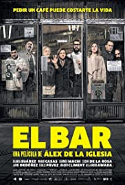

Já há um tempo, os filmes espanhóis entraram na mira de quem quer fugir da pegada hollywoodiana ou de quem simplesmente procura por um bom filme. A produção espanhola é bastante diversificada e percorre vários estilos cinematográficos: desde comédias ácidas e irreverentes, passando por suspenses e policiais muito bem engendrados, até filmes consagrados como a distopia apresentada em “O Poço”. É um universo que vale muito a pena ser explorado e, pensando nisso, preparei para vocês uma lista com alguns filmes espanhóis excelentes disponíveis no serviço de streaming da Netflix. Vamos às sugestões!
O Bar (2017)
El Bar
1h42 | Comédia, Suspense
6,3/10

<
Em um bar no centro de Madri, várias pessoas tomam café da manhã tranquilamente, como de costume. Mas, quando um dos clientes leva um tiro na cabeça ao colocar os pés fora do local, o clima de tensão invade o local. Agora eles estão presos, já que temem sair do bar e também serem mortos. O problema é que a convivência com estranhos pode ser tão perigosa quanto se arriscar do lado de fora.
Sete velhos amigos se reúnem para um jantar e decidem compartilhar cada mensagem de texto, e-mail e telefone que recebem durante a noite. O que parece um jogo inocente começa a desencadear uma tormenta entre eles.
Um buraco de minhoca criado por uma tempestade no mesmo horário e no mesmo dia com 25 anos de diferença cria uma ligação entre o passado e o futuro. Vera (Adriana Ugarte) acabou de se mudar para uma nova casa e descobre que o garotinho que morava lá morreu atropelado 25 anos antes.
Um grupo de doentes obsessivo-compulsivos espera que o seu médico chegue para as suas consultas, o que os obriga a lidar com as suas excêntricas peculiaridades. Esta comédia baseia-se na peça de Laurent Baffie de 2005, "TOC TOC", que foi um sucesso de bilheteira em Espanha.